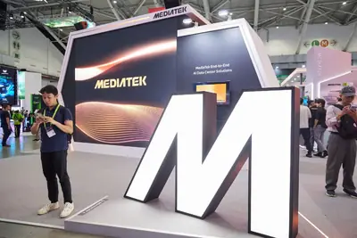
其他AI 每日新聞彙整
全部主題
其他
2 家媒體報導asicdatacenter2028
聯發科ASIC傳言逐一拆彈 第二專案與第二客戶雙雙鎖定2028發酵
台系IC設計龍頭聯發科最新的2026年第3季法說會，外界關注焦點幾乎集中於資料中心特用晶片（ASIC）業務上。針對市場近期對第二個AI加速器ASIC專案延遲、EMIB封裝...
- DIGITIMES 聯發科ASIC傳言逐一拆彈 第二專案與第二客戶雙雙鎖定2028發酵
- TechOrange 科技報橘 【科技早餐】聯發科 AI 晶片開始出貨！Google 攜鴻海挑戰半年部署 TPU
h200200300
中國本土AI晶片替代H200 華為、寒武紀、平頭哥各有戰線
天數智芯天垓300公布部分指標超越NVIDIA H200的實測結果，讓中國本土AI晶片追趕高階GPU的進展再受關注。不過從整體產業競爭來看，中國業者正嘗試透過晶片設計、軟...
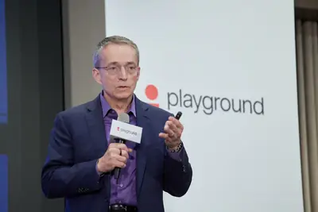
- DIGITIMES DIGITIMES Today：聯發科全面澄清ASIC業務傳言 | 台灣愈來愈重視研發 | 中國本土AI晶片替代H200
- DIGITIMES 中國本土AI晶片替代H200 華為、寒武紀、平頭哥各有戰線
- DIGITIMES 天數智芯天垓300實測效能部分超越H200 長上下文、MoE推論成亮點
agent
AI 寫程式又快又多，漏洞風險與「責任歸屬」成企業開發新難題
生成式 AI 大幅加速程式開發，AI 代理（AI agent）也逐步自動執行任務，但出了問題該由誰負責，成為產 […]
- 科技新報 TechNews AI 寫程式又快又多，漏洞風險與「責任歸屬」成企業開發新難題
safety
駭客也開始用 AI 了，企業的資安防護跟得上嗎？
近年許多企業管理層積極將生成式 AI 導入日常營運，希望提升業務效率與服務品質。然而，這項技術幫企業革命生產力 […]
- 科技新報 TechNews 駭客也開始用 AI 了，企業的資安防護跟得上嗎？
bmc2027csp
新唐：CSP和新創等新客戶加入 2027年BMC出貨規模擴大
受惠AI需求暢旺，既有客戶需求增加，以及新客戶陸續進入量產，新唐科技預期，2027年遠端伺服器控制晶片（BMC）成長幅度將優於2026年。
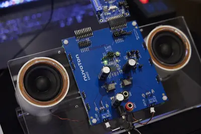
- DIGITIMES 新唐：CSP和新創等新客戶加入 2027年BMC出貨規模擴大
hbm
黃欽勇：台韓合作比競爭更重要 AI狂飆下台灣靠什麼勝出？
人工智慧（AI）帶動全球半導體需求快速擴張，台灣與南韓雖然在晶圓代工、記憶體及先進封裝領域各有優勢，但AI晶片供應鏈日益複雜，兩國產業關係正從單純競爭走向合作。
- DIGITIMES 黃欽勇：台韓合作比競爭更重要 AI狂飆下台灣靠什麼勝出？
sk-hynixsocamm2nvidia
SK海力士SOCAMM2訂單逐季增加 基板廠急擴產卻恐缺原料
SK海力士（SK Hynix）傳正擴大用於NVIDIA下一代AI平台Vera Rubin的SOCAMM2生產，帶動相關印刷電路板（PCB）訂單增加。然而，隨著銅箔基板（CCL）等原材料...
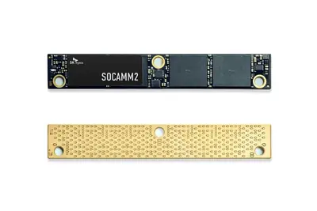
- DIGITIMES SK海力士SOCAMM2訂單逐季增加 基板廠急擴產卻恐缺原料
hhtdtokenaidc
（HHTD 26）Token暴漲60倍推動AIDC電力轉型 施耐德與鴻海布局模組化AI工廠
生成式AI帶動資料中心建置需求快速攀升，也使電力供應、散熱與能源管理成為AI基礎設施的重要挑戰。
hbmwi-fi
立積：網通需求不差卻卡記憶體供貨 Wi-Fi 7明年市佔有望5成
射頻晶片廠立積近日召開法說會，立積業務行銷處副總黃智杰表示，AI需求升溫推高供應鏈成本，記憶體、PCB與被動元件都受到影響，因此，即便整體網通的需求狀況不差，但...
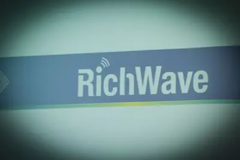
- DIGITIMES 立積：網通需求不差卻卡記憶體供貨 Wi-Fi 7明年市佔有望5成
nvidiacompute
從股價剩 8 元到打入輝達供應鏈，一詮靠黑手功夫擠進 AI 散熱賽道
當 AI 晶片算力越來越強，代價之一就是越來越「燙」，近年最夯的討論，就是把散熱元件，從裝在外部、疊在晶片上方 […]
- 科技新報 TechNews 從股價剩 8 元到打入輝達供應鏈，一詮靠黑手功夫擠進 AI 散熱賽道
microsoft
微软 AI 负责人苏莱曼：AI 模型没有意识，我们应确保它永远如此
IT之家 11 月 2 日消息，微软 AI 负责人（Mustafa Suleyman）昨天在 X 平台发布长文，称目前的 AI 模型并不具备意识，人们应该让这种情况一直保持下去。 IT之家了解到，苏莱曼表示：“据我了解，如果开发具有意识的 AI 是可能的，那么这么做将是鲁莽的，我们不应该开发这类 AI。如果训练过程中开始出现意识，我会呼吁所有人暂停 AI 开发，直到可以从设计层面消除这些特性。” 他认为，如果有任何证据能表明 AI 模型具备意识，就应该立即向公众披露，以便整个社会共同决定下一步怎么做。 他说道：“我们这些 AI 开发员，完全没有权利将具有
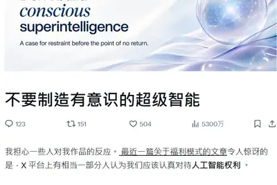
gallup
蓋洛普調查：AI 職場紅利分配不均，高學歷與高薪族群受惠最多
美國民調機構蓋洛普（Gallup）最新調查指出，工作使用人工智慧（AI）的美國員工多數認為 AI 提升效率與創 […]
- 科技新報 TechNews 蓋洛普調查：AI 職場紅利分配不均，高學歷與高薪族群受惠最多
AI 為什麼會數錯字母、亂引用來源？關鍵在「預測」而非「理解」
生成式人工智慧近年在寫作、翻譯、程式撰寫與資料整理等工作上表現亮眼，但最新整理也再次凸顯，這類系統在一些看似簡 […]
- 科技新報 TechNews AI 為什麼會數錯字母、亂引用來源？關鍵在「預測」而非「理解」
amazonopenai
OpenAI 即将启动大规模公关宣传，考虑将数据中心重新包装为“AI 算力园区”
IT之家 11 月 2 日消息，据外媒 Axios 昨天报道，OpenAI 正准备在周二美国中期选举结束后，发起大规模公关宣传活动。 OpenAI 首席全球事务官克里斯 · 莱汉（Chris Lehane）对此表示，此次中期选举将成为 2028 年总统大选的“预告片”。未来， 人工智能将成为大选的核心议题 。 IT之家注意到，OpenAI 准备在未来加强与公众沟通 AI 相关话题。莱汉提到，他们计划制定 AI 发展速度限制；并寻找方法，让人们认识到 AI 如何赋能日常生活；推动美国参与制定全球标准； 以及将数据中心重新包装为“AI 算力园区” 。 莱汉认
centersdatamight
OpenAI might rebrand its data centers as ‘AI compute campuses’
Data centers are deeply unpopular. But what if we called them something else?
techmakeceos
AI can make tech CEOs’ lives easier. What about everyone else?
On Equity, we discuss why tech CEO statements can seem so tone deaf.
kylekingsburyllms
Quoting Kyle Kingsbury
More broadly, the use of LLMs erodes trust in documentation, in software, and in the organizations which produce them. Perhaps engineers will begin to treat any new software project with suspicion—the signals we used to rely on as markers of a mature system are now easier to coun
- Simon Willison Quoting Kyle Kingsbury
hackertubebooksmentioned
Show HN: HackerBooks – HackerTube, but for books mentioned on HN
Saw Karpathy's HackerTube and wanted the same thing for books. So I had Claude build one (Opus 5.5). It's ~16.5k books that at least two different HN commenters brought up, from 2007 till now. Each book links back to the comments that mentioned it. Data is downloadable from the a
- Hacker News (100+) Show HN: HackerBooks – HackerTube, but for books mentioned on HN
anthropicrobotmeta
OpenAI、谷歌、微软和 Anthropic 联手推行 AI 数据抓取退出标准
IT之家 11 月 1 日消息，OpenAI、谷歌、微软以及 Anthropic 近日宣布将采用一项新标准，内容发布方可以借助该标准选择拒绝 AI 抓取自家网站内容。借助这项管控机制，内容发布方可以一次性向多家 AI 企业统一申明自身针对 AI 模型训练的内容使用偏好，而不必为每家企业单独设置规则。 该标准由 Anthropic 技术负责人 Kevin Kelley 向互联网工程任务组（IETF）提出，并将集成在网站的 robots.txt 文件中。 长期以来， robots.txt 文件用于告知网络爬虫哪些网站内容允许抓取、哪些禁止抓取，适用场景包含搜
guardinggatesknowledge
Guarding the Gates of Knowledge
A recent scroll through social media got me thinking about trust. About half my feed was filled with AI slop that astute users would call out as being machine-generated, often to the embarrassment of the rube who unknowingly spread it and sometimes to the delight of the poster wh
- IEEE Spectrum AI Guarding the Gates of Knowledge
clateqmlbeta
Qt 推出零代码嵌入式界面设计工具 Clate，设计成果可直接导出 QML 代码
IT之家 11 月 1 日消息，Qt 宣布推出一款嵌入式设备界面设计工具 Clate，设计师无需编写代码，即可通过可视化编辑器或 AI 生成操作界面，并将设计成果导出为 QML 代码，供工程师集成至 Qt 应用程序。官方现已开放首个 Beta 测试版本 0.6 供用户免费下载使用，IT之家附项目地址（ https://doc.qt.io/clate/docs/release-notes/clate-0-6/ ）。 IT之家获悉，Clate 基于 Qt Quick 构建，主要面向工业设备、医疗仪器及消费电子产品的人机交互界面（HMI）设计。设计师可以调整各
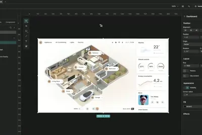
regulation
市场监管总局发布钢铁智能制造相关国家标准：破设计口径不一、数据互通难题
IT之家 11 月 1 日消息，据市场监管总局，为持续提升钢铁行业先进制造水平，市场监管总局日前发布《智能制 造 废 钢智能工厂设计要求》《智能制 造 钢 铁智能工厂数字孪生系统技术要求》《智能制 造 钢 铁工业多基地制造资源协同管控系统技术要求》系列国家标准。该 3 项标准分别锚定 废钢工厂、数字孪生、多基地协同 等关键环节，支撑构建钢铁先进制造技术要求体系。 IT之家从公告获悉，该 3 项标准针对钢铁行业流程长、工序多、界面复杂，以及工厂之间、工序与工序之间长期存在 设计口径不一、系统重复开发、数据难以互通、跨基地资源难以统筹 等问题，提供清晰的解决
1751000
工信部赛迪研究院：我国人工智能推理数据量首超训练数据量，截至 6 月日均词元调用量超 175 万亿
IT之家 11 月 1 日消息，据央视新闻今日报道，中国电子信息产业发展研究院（简称“赛迪研究院”，英文缩写 CCID）昨日发布的《新域新质创新发展十大趋势》显示， 我国人工智能推理数据量首次超过训练数据量 ，标志着我国人工智能从模型训练研发阶段迈入规模化产业应用阶段。 数据显示，截至 2026 年 6 月， 日均词元调用量超过 175 万亿 ，相比 2024 年年初增长 1000 多倍。顶尖大模型的迭代周期也从过去的几个月压缩到几周甚至几天，人工智能正从“喂模型”的实验室阶段， 全面转入“用模型”的产业落地阶段 。 报道提到，随着“人工智能 + 制造”
chatbotsleadinghikers
Chatbots Are Leading Hikers Astray, With Dangerous Consequences
Outsourcing planning to AI can lead people to surrender their own critical thinking, which can have potentially deadly results in places like the backcountry.
xiaomi
第二十四届半导体封测年会定档 11 月 4 日至 6 日举办，华为、龙芯中科、小米汽车等确认参会
IT之家 11 月 1 日消息，2026 年半导体封装测试技术与市场年会 (第二十四届) 将于 2026 年 11 月 4-6 日 在中国南京丰大国际大酒店举行。会议由中国半导体行业协会指导，中国半导体行业协会封测分会主办。 据介绍，在为期两天的会议中，来自华天科技、长电科技、通富微电、壁仞科技、京东方、云天半导体等封测领域、芯片设计领域、玻璃基板领域、TGV 领域的龙头企业的重磅嘉宾将通过主论坛、专题报告、供需对接等形式，交流先进封装的最新发展方向。 IT之家附大会主要信息如下： 1. 会议时间 ： 2026 年 11 月 4-6 日 2. 会议地点：
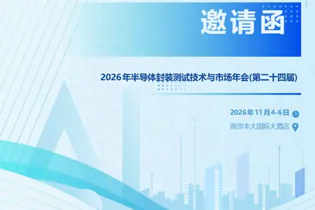
ethopenai
OpenAI宣稱推翻「指數時間假設」，震撼電腦科學界！ETH是什麼，為何牽動數百篇研究？
OpenAI宣稱AI模型推翻計算複雜度基石「指數時間假設」，全球數百篇論文以此為前提。成果正由ETH提出者審查，學界態度仍相當謹慎。
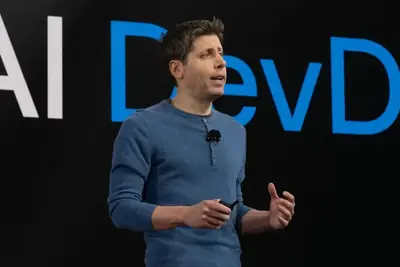
學者授四招破解假圖，點名食物照是 AI 最大死穴
隨著生成式人工智慧（AI）快速普及，逼真的假照片在網路上流竄，如何分辨 AI 生成影像已成為大眾關注的焦點。美 […]
- 科技新報 TechNews 學者授四招破解假圖，點名食物照是 AI 最大死穴
alphaschool
美 AI 私校 Alpha School 號稱學習快兩倍，紐時揭數據僅 42% 學生達標
主打以人工智慧（AI）教學的美國私校連鎖體系 Alpha School，對家長承諾學生每天只需 2 小時學科課 […]
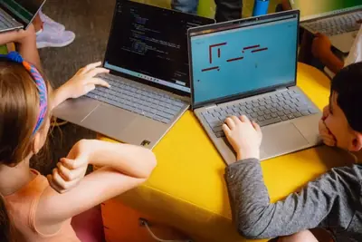
- 科技新報 TechNews 美 AI 私校 Alpha School 號稱學習快兩倍，紐時揭數據僅 42% 學生達標
geminigoogle
Google工程師面試變了！求職者可用Gemini，還考你懂不懂「指揮AI」
AI不再是面試作弊。Google試辦新面試，開放應徵者用Gemini寫程式，改考提示工程、驗證輸出與除錯。

gemmagoogledatacenter
Google 太空資料中心首顆晶片啟動，Gemma 4 模型在軌運作還寫詩
在 10 月 30 日的一篇官方部落格文章中， Google 表示已成功啟動實驗衛星上的 TPU 晶片，且讓衛 […]
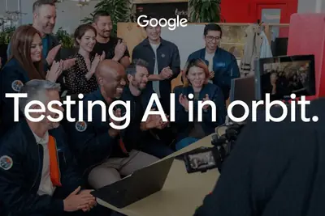
- 科技新報 TechNews Google 太空資料中心首顆晶片啟動，Gemma 4 模型在軌運作還寫詩